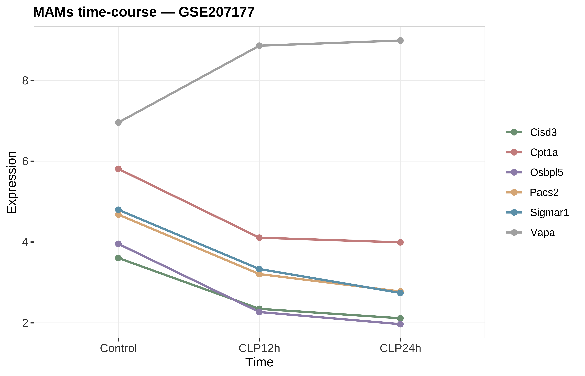
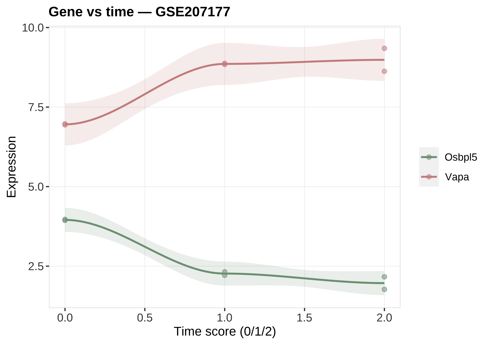
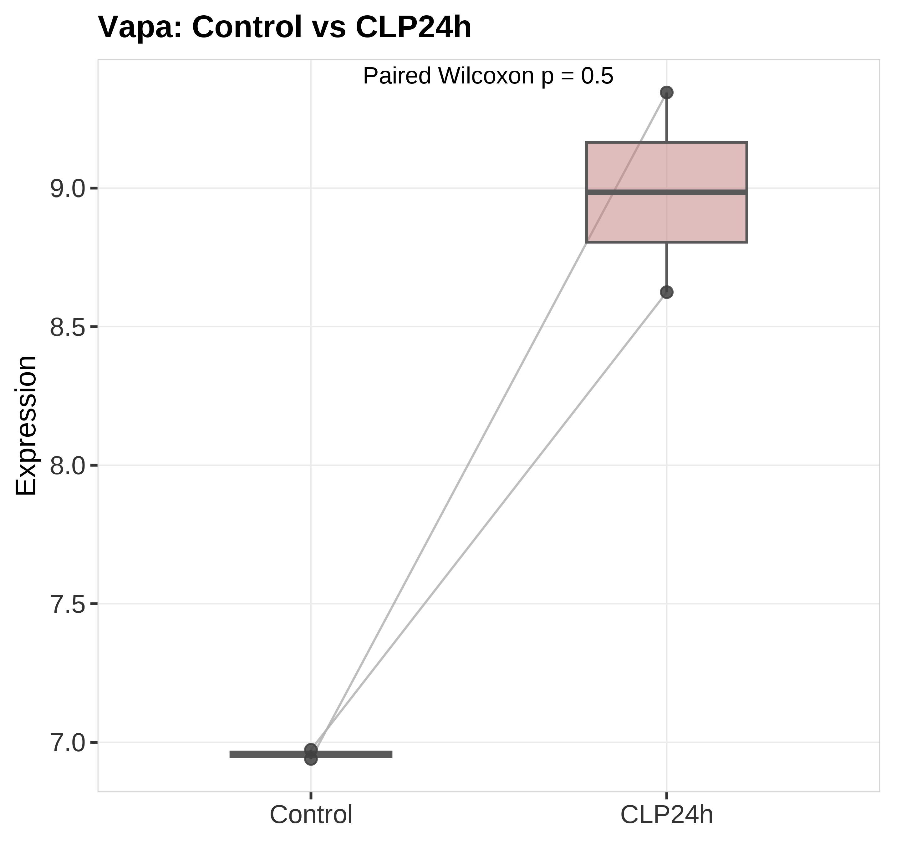

状态：PASS
sourced: 运行骨架_runSkeleton.R
data_provenance: REAL — GSE207177 书清 MAMs时序表达。
"skill","stage","n_rows","n_cols","n_samples","group_source","toy","data_provenance","accession","sourced_skill_scripts","notes","checked_at" "DoseTime","post",258,5,6,"GSE207177 MAMs time-course",FALSE,"REAL","GSE207177","sourced: 运行骨架_runSkeleton.R","line + severity trend + paired; data_provenance=REAL","2026-07-19 20:37:50"



REAL GSE207177 MAMs 时序表达：折线 + 趋势 + Control–CLP24h 配对。data_provenance=REAL。
生成时间：2026-07-19 20:37:52 · 报告规范：统一交付规范_DeliveryStandards · 版本 v1